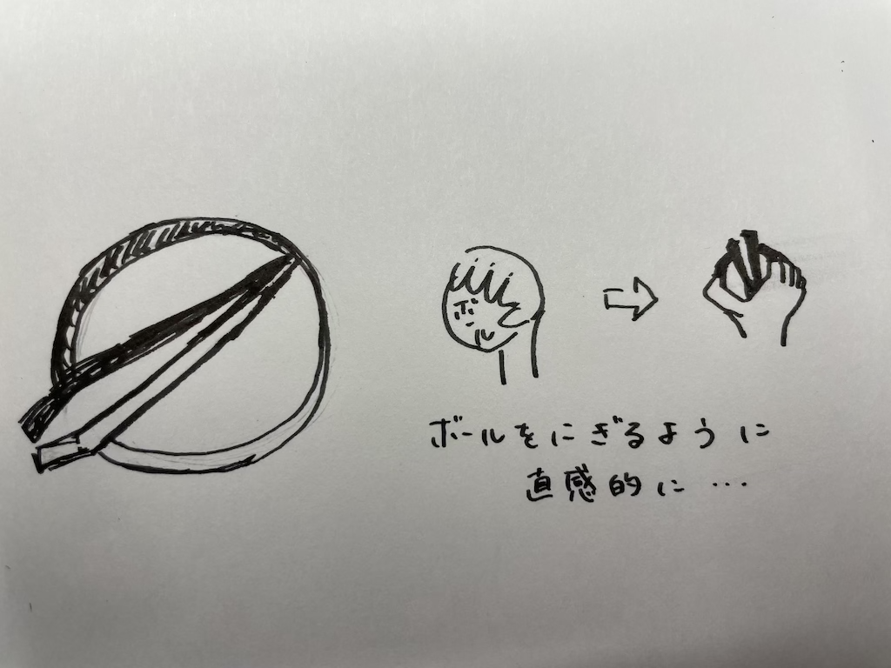

作品タイトル：直感的ピンセット
【構想図】

【完成作品】
【設計ファイル】
stlファイル
【作品説明】
円形とピンセットを組み合わせた作品。
ピンセット自体の円を外側から掴み、掴む動作を直感的に行うことができる。
また、ハサミの容量で指を入れて掴む・放す動作を楽に行うことも可能である。
【製作理由】
自分自身、細かい作業が得意ではなく、ピンセットの扱いも上手くできないので、
いかに簡単に使用できるかを追求したかった。「掴む」という動作を行う状況としてボールが思いつき、
丸や円であれば不器用な私でも容易に使いこなせるのではないかと考え、製作に至った。
【製作プロセス】
はじめ製作を考えていたものはこのような形。
ふたつの半円に親指と人差し指をはめ込む形での操作を想定していた。
しかし、画像の指との比較でわかる通り、サイズが合わず、
これ以上大きくすると規定からも外れてしまうことから断念。
次に製作したものが完成作品となった。サイズはピンポン玉ほどである。
はじめのものはピンセット部分が主体となっていたが、２つ目は円形部を主とし、
指を差し込んでの使用はもちろん、握るようにして掴む動作が可能となった。
より直感的な操作で、簡単に使用できるピンセットが完成した。